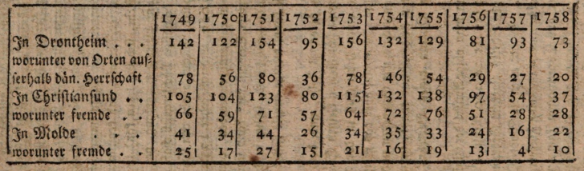

Efterretninger om Handelen i Byen og Stiftet Drontheim i Norge.
I den tid, da jeg opholdt mig i byen og stiftet Drontheim, fra efteråret 1758 til ind i januar 1760, anmodede sal. Roger mig — som dengang indsamlede materialer til sine Lettres sur le Dannemarc — om efterretninger om dette stifts næringsliv, hvilke han også modtog.
Da hverken hr. Roger eller hans efterfølger hr. Reverdil i deres breve nåede frem til provinserne, og jeg formoder, at efterretninger om et ikke ubetydeligt erhverv og handel i en af Europas nordligste egne ikke vil være uvelkomne for statshusholdningens venner, så vil jeg, ud fra de dengang opbevarede materialer (thi af det til hr. Roger sendte mémoire har jeg ikke beholdt nogen afskrift), give en kort beretning om dette erhverv i Drontheims stift.
Stiftet Drontheim (på landsmålet Trundhiem eller Tronhiem) består af fire amter: Drontheim, Romsdalen og Nordmør (hvorunder også fogderiet Sundmør, som dog i øvrigt hører til Bergen stift, er medregnet under dette amtmandsskab), Nordlandene, Finmarken;og har tre købstæder: Drontheim, Christiansund i Nordmør og Molde i Romsdalen.
Ved den folketælling, som blev foretaget i de danske stater i året 1769, fandtes der i hele stiftet 164.722 mennesker,i amtet Drontheim: 70.520,i amtet Romsdalen og Nordmør: 25.382,i Nordlandene: 53.500,i Finmarken: 5.984,i byen Drontheim: 7.478,i byen Christiansund: 1.151,i byen Molde: 707.
I byen Drontheim, medregnet dens to forstæder, fandtes der i året 1758 i alt 1.318 ildsteder og 125 pakhuse beliggende ved vandet.
Med Finmarken drives der fra København en lukket handel, mens Nordlandene hovedsagelig handler med Bergen, og deres forbindelse med Drontheim er af ringe betydning, således at disse to distrikter falder bort fra betragtningen af den egentlige drontheimske handel.
Om den landbaserede samhandel, som dette stift fører med Sverige og med Christiania stift — hvorom der dog senere skal siges noget — mangler der bestemte oplysninger, og derfor indskrænker disse efterretninger sig hovedsageligt til den søhandel, som føres og udøves i de tre toldsteder: Drontheim, Christiansund og Molde.
Tolden i disse tre byer — både på udførende og indkommende varer — var dengang bortforpagtet til et selskab (efter hvad jeg ved, udelukkende drontheimske negocianter), og det var begyndelsen på en ny tiårig forpagtning, forudgået af en anden, ligeledes tiårig forpagtning.
Af dette forpagtningsselskabs imødekommenhed modtog jeg uddrag af toldregistrene for året 1758; en anset handelsmand, medlem af dette selskab, påtog sig det arbejde at gennemgå disse uddrag sammen med mig, således at vi vurderede hver eneste post af ud- og indgående varer, og jeg vil nu forelægge læserne resultaterne af denne operation, tillige med en særskilt optegnelse over hovedartiklerne.
Det vurderede beløb af de i Drontheim toldregistrerede varer var:
Eksporter i værdi – 268,320 Rthlr.
Importer –––––––––– 263,500
Overskud af eksporten – 4,820
Det vurderede beløb af de i Christiansund toldregistrerede varer:
Eksporter –––––––––– 74,000
Importer –––––––––– 28,000
Overskud af eksporten – 44,000
Det vurderede beløb af de i Molde toldregistrerede varer:
Eksporter –––––––––– 34,900
Importer –––––––––– 16,000
Overskud af eksporten – 18,000
Massen af denne handel, hvad angår eksport og import, udgjorde altså 681,820 rigsdaler (Rdlr.), og overskuddet af eksporten over importen var 67,000 rigsdaler.
Af eksportvarerne afgik fra Drontheim:
for 9,200 rigsdaler til Danmark,
2,820 til hertugdømmerne Slesvig og Holsten,
5,600 til andre dele af Norge,
100,700 til fremmede steder uden for dansk herredømme,
150,000 gar-kobber, for det meste til Holland.
Af importvarerne kom til Drontheim:
for 52,000 rigsdaler fra Danmark,
17,600 fra hertugdømmerne,
10,600 fra andre dele af Norge,
193,000 fra fremmede steder uden for dansk herredømme.
Og når man sammenholder de to sidste poster af eksporten med den sidste post af importen, så har udlændingen haft et beløb på 57,700 rigsdaler at betale for varer, som han har hentet fra Drontheim — uden at medregne det, som er taget fra Christiansund og Molde.
Blandt de indførte varer til Drontheim var der:
for 39,250 rigsdaler korn
12,900 – malt
540 – humle
16,680 – hør og hamp
11,900 – tobak i blade
14,000 – fabrikeret tobak
26,400 – sukker
5,700 – vin
6,570 – brændevin
6,660 – te og kaffe
5,550 – salt, heraf for 3,550 fransk, for 2,000 portugisisk
1,660 – salpeter
8,500 – jern
562 – stenkul
11,870 – silkestoffer
47,650 – uldvarer
1,034 – hatte
18,420 – linnedvarer
500 – kniplinger
14,350 – varer fra de såkaldte isenkramforretninger, herunder 863 rigsdaler for papir
1,930 – spillekort
8,170 – varer fra de såkaldte urtekræmmerboder
1,010 – sæbe
3,823 – krudt
4,000 – læder
950 – mursten og tagsten
840 – forarbejdet sølv
Blandt de varer, der blev udført fra Drontheim, fandtes:
for 66,500 rigsdaler fisk, herunder for 26,800 rigsdaler sild
26,400 – brædder, hvoraf for 24,000 rigsdaler af rød gran (Pinus Abies)
4,100 – pelsskind og huder, herunder for 2,200 bukskind
15,400 – tran
1,410 – tjære
2,120 – møllesten
Af de skibe, med hvilke denne handel blev ført, hørte 26 hjemme i Drontheim, og disse førte tilsammen 1759 læster, hvoraf 5 var på 200 læster og derover, og ingen jagter er medregnet. Fra Danmark og hertugdømmerne kom der til Drontheim 18 skibe med tilsammen 600 læster; fra andre norske havne 9 fartøjer, heraf 3 jagter, tilsammen 405 læster; fra England (den vestlige kyst), Skotland og Irland 15 fartøjer med tilsammen 1200 læster; fra Holland 5 fartøjer på 228 læster. Det bliver tilsammen 83 skibe og 4192 læster. Christiansund havde 2 og Molde 4 egne skibe. I alt lossede eller lastede i Drontheim 73 skibe, i Christiansund 37, i Molde 22, i alle 3 toldbyer tilsammen 132 skibe, hvoraf 58 fra fremmede havne.
Året 1758 var et dårligt år, hvilket fremgår af følgende sammenligning.
Der lossede eller lastede nemlig i årene...

Fiskeriet var dette år dårligt ved den drontheimiske kyst, og fiskene, som næst efter kobber udgør den vigtigste eksportartikel, fylder særligt mange skibsladninger. Det plejer især en art mager, men stor sild, som har stor afsætning i Østersøen, at indfinde sig i vintermånederne efter nytår ved denne kyst, især ved Christiansund (hvor, for øvrigt til oplysning for læsere i Tyskland, oceanet altid er åbent, og der først i de inderste, dybere, smallere og krogede bugter – fjorde, på engelsk firths – kan lægge sig is), i store stimer. Denne sildegang, som i det forrige årti havde været overordentligt udbytterig for den daværende pachtforening, idet alene fra Christiansund i året 1753 blev udført 70,000 og i 1754 74,000 tønder sild, hvoraf to tredjedele af værdien var ren indtægt for landet, var dog allerede i de to sidste år aftaget, og slog dette år så fuldstændig fejl, at man knap så enkelte fisk af arten.
Det var et dårligt år, og dog havde Drontheim med de to beslægtede småbyer i sin søhandel et overskud på handelsbalancen på 67,000 rigsdaler. Stiftet vinder dog også betydeligt på den handel, som det fører landvejs med Sverige og med Stiftet Christiania eller Aggershuus, skønt størrelsen af denne handel ikke lader sig angive.
Det springer straks i øjnene, når man betragter ovenstående importartikler, at der for 26,000 rigsdaler tabak og lige så meget sukker er tale om overordentligt store mængder til stiftets eget forbrug. Men byen Drontheim har en betydelig tobaksfabrikation og et sukkerraffinaderi, hvortil den rå sukker kom fra København og var indeholdt i de 52,000 rigsdaler for varer fra Danmark, og den afsætter disse to varer, såvel som meget kaffe og te, vin og brændevin samt mange krambodsvarer, til indlandet. Med alle disse varer kan svenskerne, herunder lapperne i de tilgrænsende provinser Jämtland og andre dele af det svenske Nordland, bedre, nemmere og billigere forsynes fra denne del af Norge end fra deres egne handelsbyer. Dette kan ikke forhindres af nogen regeringsforanstaltninger, som eventuelt måtte ønske at modarbejde det af misundelse, og de varer, som svenskerne kan give i bytte, opvejer langt fra det, de tager med sig fra Drontheim. Denne handel med svenskerne foregår især på et marked, der holdes i Levanger, 6 mil nordøst for Drontheim, og som lejlighedsvis finder sted hele året rundt.
Til handelen med indbyggerne i Stiftet Christiania giver især kobberminen ved Røraas, 16 mil sydøst for Drontheim, anledning. Da indbyggerne i denne bergby og bergværksområde, på en ubeboelig, øde slette, må have alle og enhver nødvendighed tilført, giver det anledning til en tilførsel, som ikke blot begrænser sig til de egentlige behov hos beboerne i dette bergværksområde, men som også omfatter en vareudveksling blandt tilførene imellem. For dels ønsker de, som kommer med fragt til Røraas, også gerne at have fragt med tilbage, dels kan deres befragtere regne med, at hvis de sender mere varer til Røraas, end der lige er behov for, vil der på stedet også findes flere købere end blot indbyggerne i Røraas, og at de til gengæld kan modtage varer, som de behøver, tilbage. Hvad der ikke bliver byttet direkte, forbliver til indirekte bytte i lagrene hos handlende i Røraas, og denne vareudveksling er til tider om vinteren – den rette tid for alt landtransport i Norge – lige så livlig som et markedsdag. De, som kommer til Røraas for at hente kobberet med tilbage til Drontheim, bringer derfor under alle slags nødvendigheder især fiskvarer fra Drontheim med, ikke blot til Røraas, men også til de indbyggere i dalene i Christiania Stift, som kommer dertil. Indbyggerne i Drontheims sogne Selboe, som har deres egentlige erhverv i fragtfarten mellem Drontheim og Røraas og har mange hundrede heste i arbejde, medbringer især mange kværnsten, som de bryder i deres sogn, til Røraas. Disse kværnsten hentes derfra til dalene i Stiftet Christiania og sælges overalt i stiftet, ligesom det sker til søs fra Drontheim til Stiftet Bergen og videre sydpå; for i Norge har hver bondegård sin egen mølle, så salget af kværnsten er betydeligt. Indbyggerne i dalene i Stiftet Christiania medbringer især jern til Røraas, da der ikke findes nogen jernværker i Stiftet Drontheim, bortset fra et jernværk ikke langt fra Drontheim, som dengang var nyligt oprettet, men ikke var særlig succesfuldt. Også svenskerne kommer meget til Røraas.
Jeg tror snarere, at det er for lidt end for meget at antage, at overskuddet af den landgående handel, som Drontheim driver, sammen med de førnævnte 67.000 rigsdaler fortjeneste fra søhandelen, udgør en samlet sum på 100.000 rigsdaler. Med dette beløb må og kan dette stift også dække sine sædvanlige skatter og afgifter til kongen, efter fradrag af hvad regeringen selv bruger inden for distriktet, samt sine overførsler til København til dækning af udgifterne til studerende og andre Drontheimere, som opholder sig dér, og til det, Drontheim bruger på landets kollegier til administrationen af sine anliggender. Det er forståeligt, at lykkelige år, som årene fra 1749 til 1755, hvor fiskerierne var så heldige, giver et overskud, der kan danne grundlag for en velstand, hvoraf man også kan leve i dårligere år og i tilfælde af ekstraordinære hændelser.
Den eftertænksomme læser vil let se, at her endnu er stof til mangfoldige overvejelser; jeg vil dog afslutte denne korte meddelelse med bemærkningen, at Drontheim fører en særdeles grundig og vigtig handel, så grundig som næppe noget andet sted i de kongelige danske stater, og vigtigere, end de fleste af mine tyske læsere nok ville have forestillet sig.
G. C. Oeder.